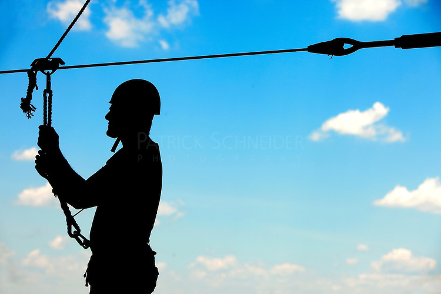

Safety Measures

Camping is a fun way to get family and friends together to enjoy the outdoors. Always be prepared for the unexpected. Do not take unnecessary chances. Do not be careless. Think before you act. Be prepared to administer basic first aid. The most effective way to prevent mishaps is to adequately prepare for the trip. Knowledge of the area, weather, terrain, limitations of your body can help to ensure a safe and enjoyable trip.
| General Tips | Trail Tips | Camping Tips | Trekking Tips | Ziplining Tips |
| Kayak, Canoeing and Rafting Tips | If you get LOST | Check list | First Aid Kit |
Zipling Tips

Originally designed to transport supplies through extreme environments such as the Himalayas and the Australian Outback, zip lines are now a popular diversion among adventurous travellers wanting a bird’s eye view of the world (and a serious adrenaline rush). The lines vary in length from a few hundred feet to more than a mile, and the fastest ones reach speeds of more than 70 miles per hour. Ready to go for a ride? Here are a few things to keep in mind before you clip on to the cable:
- Pay Attention
- The operator should give you a complete run-down of the rules, staff experience, necessary equipment, and technical instructions. They should also explain safety measures, such as security lines that keep you attached to platforms and cables. If they don’t, take your business elsewhere.
- Don’t Get Cocky
- Just because you zip lined in Costa Rica doesn’t mean you can jump right on the cable in South Africa. Guidelines, directions, harness set-up, cable design, and breaking system all vary by location. Some operators, for example, use hand braking, while others employ a spring-based braking system.
- Cover Your Feet
- No special shoes are required, but they must be sturdy and have closed toes. Running shoes and hiking boots are good options. Flip flops are not.
- Don’t Show Too Much Leg
- Unless you have a penchant for banana-hammocks, proper leg wear likely won’t be an issue. But it bears saying anyway: Knee-length shorts or pants are a must. Otherwise, the harness will chafe you in all the wrong places.
- Protect Your Dome
- A helmet will be provided by the tour operator. Wear it. You’ll also be given a harness and, if you’ll be hand braking, a pair of thick leather gloves.